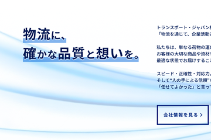
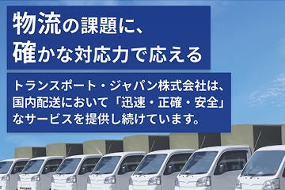

あしらいと見せ方
コーポレートサイトらしい、シンプルな見やすさを心がけて作成しました。
物流・配送業の会社なので、流れ・スピードを感じる流線形のイメージはメインコピーの下に配置。
色数を抑える代わりに文字の大きさやシャドウで単調にならないよう工夫しました。

コーポレートサイトらしい、シンプルな見やすさを心がけて作成しました。
物流・配送業の会社なので、流れ・スピードを感じる流線形のイメージはメインコピーの下に配置。
色数を抑える代わりに文字の大きさやシャドウで単調にならないよう工夫しました。

PC・SP両方のデザインを作成するにあたり、PC版レイアウトから作成し、その雰囲気を崩さないようにSPデザインを作成するという手順で制作しました。
限られた横幅でも「見やすい・わかりやすい」を意識しています。